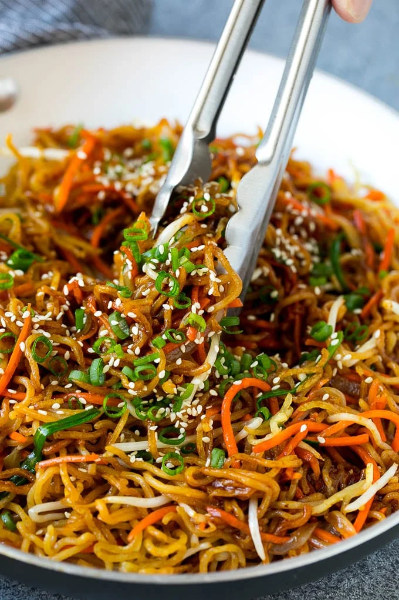

Fried Noodle Recipes

Description
Fried noodles is also another great dish that I love to eat
Recipes
- Dried Noodles
- Chicken/Pork/Shrimp
- Eggs
- vegatables
- Oil/butter
- Soy Sauce
- Oyster Sauce
- Rice Vineger
- Hoisin Sauce
- Salt
Steps
- Put water in put and cook noodles on high heat till soft
- When noodles are soft place them on a plate
- While noodle is boiling add oil to pan on high and wait for it to steam
- After pan steams add meat to it
- When meat is cooked remove from pan and place on a place
- Add oil to pan again and cook the eggs and place them on the plate when done
- Then add more oil to the pan and start cooking the vegetables
- When vegatables are soft add the noodles and all the sauces to the pan
- Cook for about 3min and then add the meat and eggs to the pan
- Cook for another 3min and then turn off the stove
- Can now serve the noodles